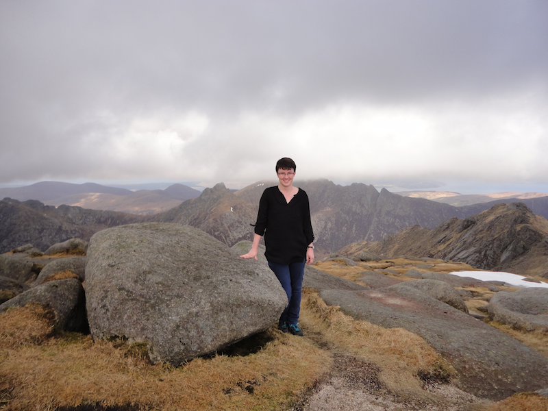
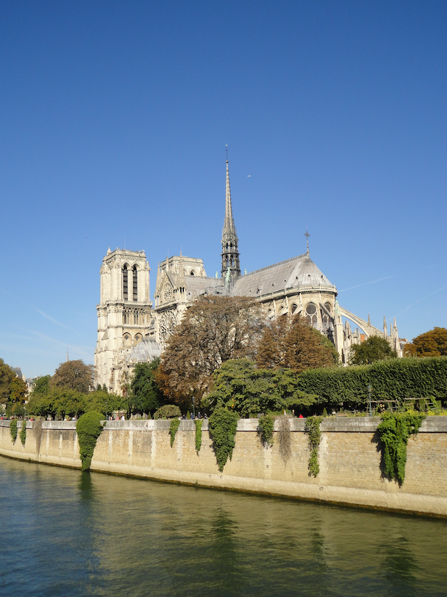
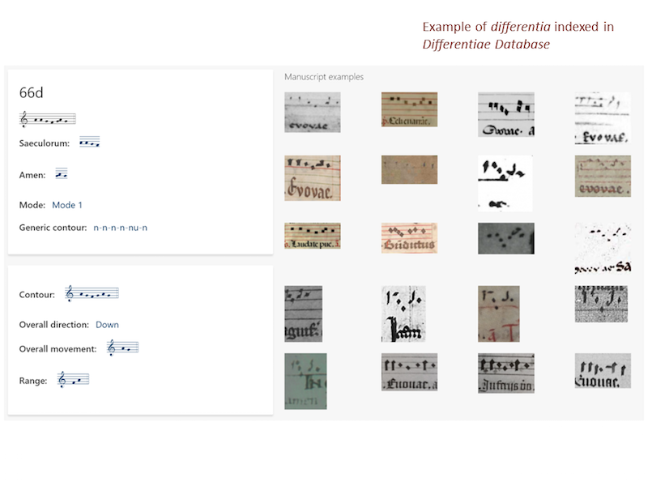
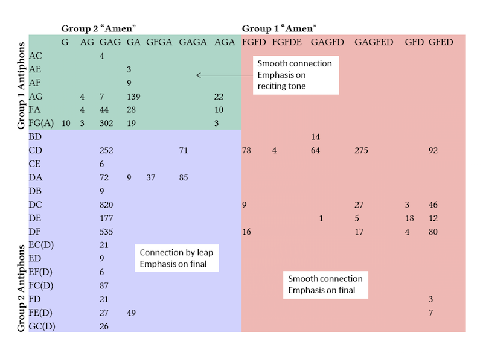
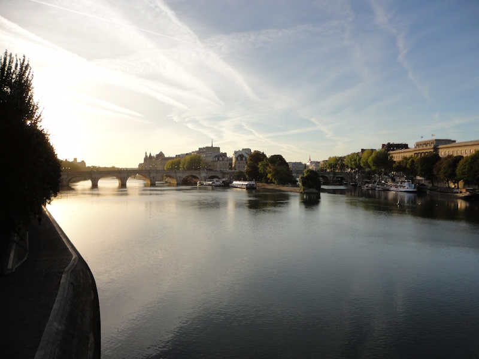

Visiting Paris with Becky Shaw: DLfM 2018
Posted by ehopkins on October 31, 2018
The International Society for Music Information Retrieval conference (ISMIR 2018) was held in Paris this year, and several SIMSSA researchers shared their work at both ISMIR and the satellite conferences. These include SIMSSA Collaborator Jorge Calvo-Zaragoza’s brand-new WoRMS conference (Workshop on Reading Music Systems) as well as DLfM, the International Conference on Digital Libraries for Musicology.
Becky Shaw has been a SIMSSA and Cantus Ultimus participant since 2016, working at SIMSSA Partner Dalhousie University, pursuing musicology and library science education while learning more about chant and digital tools for musicology.
This September, Becky went to DLfM to share her research, presenting on Differentiae in the Cantus Manuscript Database: Standardization and Musicological Application. Her work focuses on psalm differentia, the different endings to a psalm that can be used to make a smooth transition to the following antiphon. I got to ask her some questions about her trip to Paris and her research.
 Becky Shaw at Goat Fell, the highest point on the Isle of Arran in Scotland.
Emily Hopkins: Had you visited Paris before going for DLfM? Was there in particular you were looking forward to on this trip?
Becky Shaw: This was my first time in Paris, and—apart from the conference—I was really looking forward to visiting the Notre Dame Cathedral and the Sainte Chappelle. It was a short trip, but I managed to see both, as well as visiting the Louvre and Musée Cluny, where I particularly enjoyed the exhibit on the Lady and the Unicorn tapestries.
 Visiting Notre Dame.
EH: How did you develop the research question that led to your DLfM paper? Give us a brief overview of the research that you presented. (You can view the slides here).
BS: The research that I presented at DLfM was related to work that I have done over the past two years as a Research Assistant with the Cantus Manuscript Database, standardizing the differentiae field for the manuscript indices. I also presented some of my preliminary work on the relationship between differentiae and the melodic incipits of antiphons, which will be a part of my master’s thesis that I am currently working on. Prior to my work on the standardization of the indexing of differentiae, large-scale computer analyses of the function of these melodic formulas was not possible, and much can be garnered from such analyses about how differentiae were used in medieval chant. The study of such a standardized element between manuscripts can also help in studies of chant transmission and other geo-temporal relationships.

EH: What sorts of technical skills are required in this research, and how did you come to develop them?
BS: Most of the analysis that I completed for this paper was done using Excel, as were the first stages of the differentiae standardization project for Cantus. I am currently working on an interactive online database that can be used to implement the differentiae standardization system in future manuscript indices and for the further study of differentiae using an open-sourced and widely-used content management system called Drupal. I have also done further analysis of the differentiae data using Tableau Public. I developed most of the basic skills through my Master of Library and Information Studies’ courses at Dalhousie University, and taught myself additional skills as necessary to adapt these tools for my specific purposes.

EH: What were some highlights of other research you encountered at DLfM?
BS: There was a wide range of other topics presented at DLfM, from the creation of tools to genre-specific corpuses, advancements in and uses of OMR and MEI, and more. It was a packed day,and I certainly learned a lot! I was particularly intrigued by a presentation from David Lewis, David M. Weigl, Joanna Bullivant, and Kevin Page on “Publishing musicology using multimedia digital libraries,” and the possibilities that their framework tool, Music Encoding and Linked Data (MELD), enables for both academic and public musicology digital publications, combining various media sources to enhance the user’s experience.
EH: You recently did an internship with the Biblioteca Nactional de Portugal (BNP) and CESEM (where SIMSSA collaborator Elsa de Luca also works!) Can you tell us a little bit about your work there?
BS: The summer before last (2017), I spent 6 weeks in Lisbon, where I completed my practicum placement for my MLIS degree, which was made possible through Kate Helsen, who taught me during my undergraduate degree at Western University. While there, I split my time between the BNP and CESEM. At the BNP, I worked with Sílvia Sequeira, head of the music division, to catalogue a collection of chant books donated to the library in the 1990s by the National Conservatory of Lisbon, which were previously held at various monasteries in Portugal. At CESEM, I worked in a small library that services research centres in the Faculty of Social Sciences and Humanities, ID–Research and PhDs Documentation Centre, to start adding their score collection to their online catalogue.
EH: What’s up next for you, particularly in terms of directions for your research and schooling in both music and library science?
BS: I recently completed my Master of Library and Information Studies (MLIS) at Dalhousie (graduated May 2018), and am in the final year of my Master of Arts in musicology, studying with Jennifer Bain. This year I am finishing up the required course work and writing my thesis, which I am aiming to complete this summer for graduation October 2019. I also continue to work as a Research Assistant for Cantus, and am a student intern at the Dalhousie University Archives. Following the completion of my studies at Dalhousie, I will be pursuing a career in music librarianship and/or archives, and hope to continue following my music research interests in plainchant and digital musicology. At some point, I may also pursue a doctorate in musicology.
 A parting shot of the Seine.
Thanks Becky for taking the time to share with us! We’re looking forward to ISMIR 2020, which we will host here in Montreal!